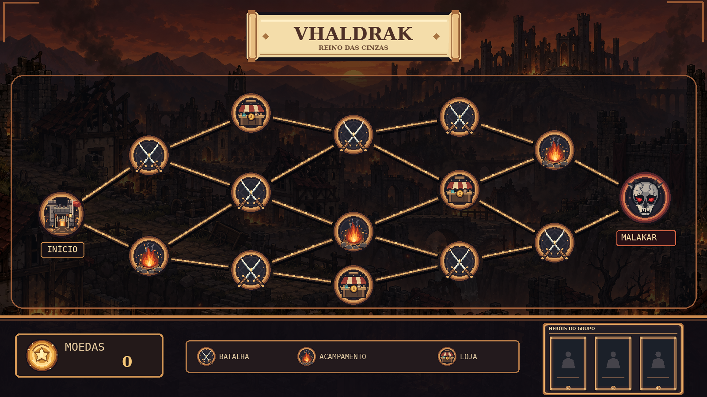
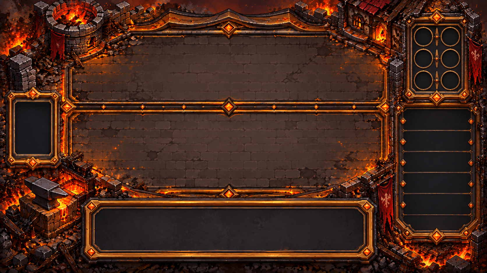
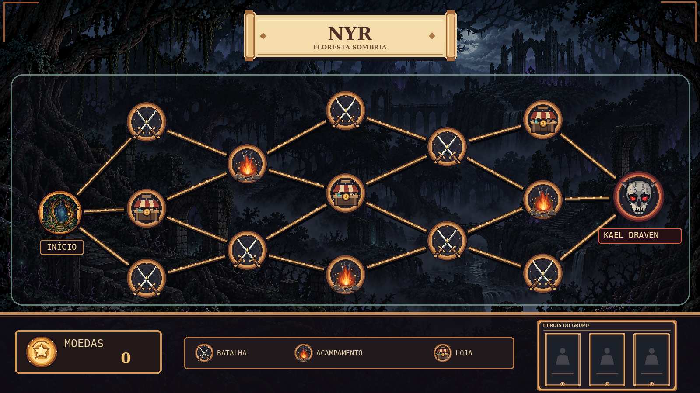
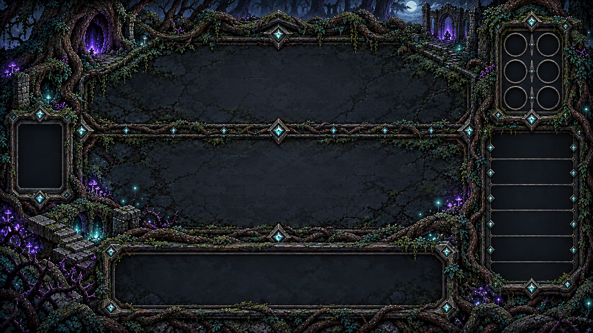
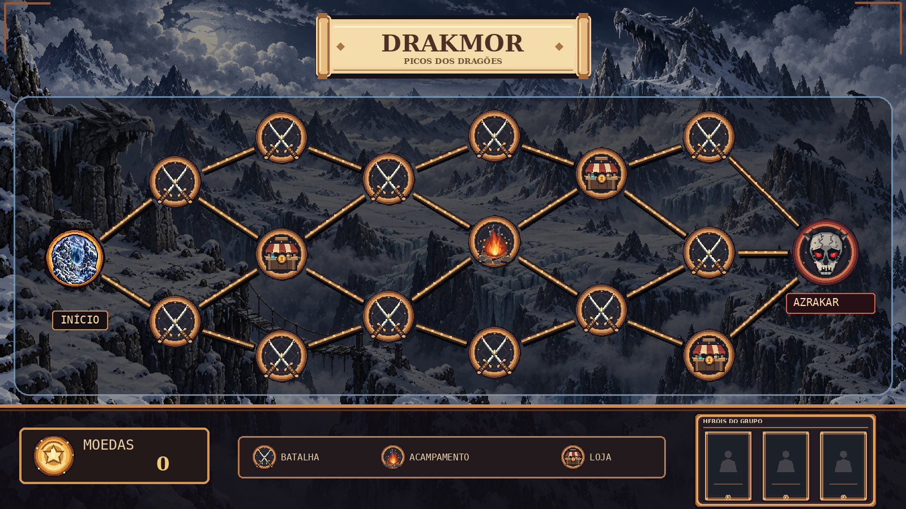
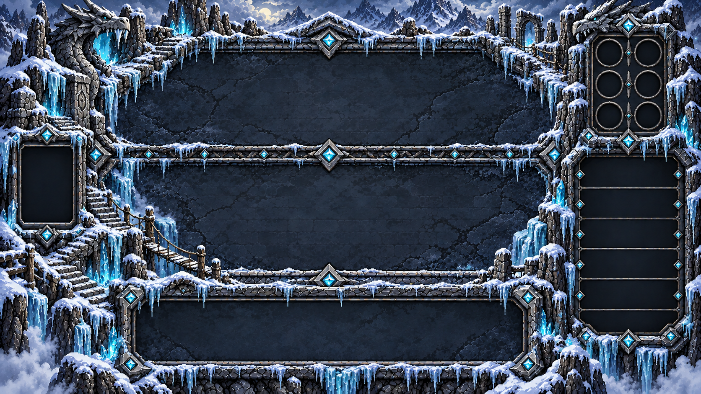

Mapas
Atlas da aventura
Vhaldrak
Uma cidade destruída, marcada por fogo e cinzas. Ruas em ruínas e um exército carbonizado compõem o cenário da primeira região.
Região I
Trilha
O caminho pela região

Campo de batalha
O cenário dos confrontos

Mecânica da região
Em Vhaldrak, os heróis podem seguir diferentes rotas entre batalhas, lojas e acampamentos. Os caminhos conduzem ao confronto com Malakar, o Tirano das Cinzas.
Floresta Sombria
Uma floresta escura, tomada pela corrupção. Árvores retorcidas e criaturas perigosas compõem o cenário da segunda região.
Região II
Trilha
O caminho pela região

Campo de batalha
O cenário dos confrontos

Mecânica da região
A Floresta Sombria apresenta rotas diferentes das de Vhaldrak. Os heróis escolhem seu caminho entre batalhas, lojas e acampamentos, até o confronto final da região.
Montanhas de Gelo
Picos congelados e caminhos cobertos de neve marcam a terceira região. Entre as montanhas, novos inimigos aguardam os heróis.
Região III
Trilha
O caminho pela região

Campo de batalha
O cenário dos confrontos

Mecânica da região
A trilha das Montanhas de Gelo é mais longa e possui menos acampamentos. Os heróis precisam planejar sua progressão até enfrentar Azrakar, o Rei Dragão Branco.